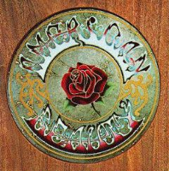
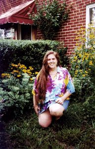

|
Alice Hines |
Damescena is played by Alice Hines, a devoted DeadHead.
 
Damescena, record holder for the longest time spent building one zone on SneezyMUD, has been around since 3.x. She spent many happy moments casting away, as the mage Weef. While Weef never managed to enter the ranks of the remarkable, Damescena aka Alice, became hooked. You can find her building beautiful wilds, and she hopes to continue enhancing the world for a long time to come. As a fantasy role player from teenage days, there was no turning back. What started with the reading of Tolkien, and then endless other fantasy based novels, led her to the lands she now frequents far too often.
In her 'other' life, Alice is the mother of 5 wonderful children. A piano and flute teacher and a bead and tie-dye artist. She considers herself 'an eclectic' with interests ranging from reading (if it's a book, she'll read it), gardening (with a particular love for flowers and herbs), and cooking (she is an avid reader of cookbooks), to natural healing, natural parenting, and all things aesthetic. She is proud to have birthed 3 of her children at home, with wonderful midwives and lends her expertise to other women as a support person for nursing mothers. On a final note, she loves and misses very much the Grateful Dead, and can often be found dancing around the house with a baby in arms, singing along with Jerry and the boys. She is proud to be sneezyMUDs residant hippie.
Visit Alice's web page at: http://www.tiedye.org